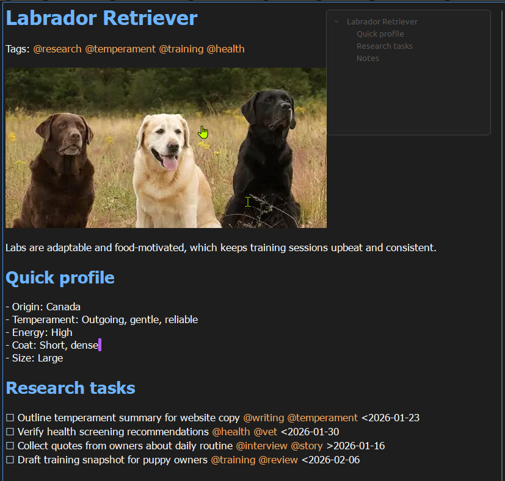

Built for people who think with words.
StillPoint is not for dashboards, metrics, or turning your life into a system. It is for writing things down and being able to find them again. “Knowledge IDE” describes how far the workspace can grow, not how complicated it must be.

Our philosophy is simple and durable.
Your thoughts belong to you
Notes live on your computer as real files you control. No accounts, no subscriptions, and no servers holding your ideas hostage.
Writing comes first
You open a page and type. Organization emerges naturally as you link ideas together over time. StillPoint never demands structure upfront.
Tools should get out of the way
StillPoint stays quiet when you need focus and reveals connections when you need context. Maps, tasks, terminals, agents, AI, and sync are optional. The tool adapts to you, not the other way around.
Simple things stay simple
A checkbox is still a checkbox. A link is still a link. StillPoint avoids turning basic writing into heavy workflows.
Ownership is the quiet superpower.
If StillPoint disappeared tomorrow, your notes would still be there — readable, editable, and yours. That is the baseline for trust.
Seeing is believing.
StillPoint only drops a hidden '.stillpoint' folder and a couple of SQLite databases in your vault folder. If you delete those, StillPoint simply rebuilds its context and indexes from your plain text files. YOUR NOTES are ALWAYS the source of truth and StillPoint just builds around them.
Built for the long term.
This project is developed with a long-term, local-first philosophy. That means:
Your data stays yours
Local files you control, always readable and portable.
Offline-first by default
StillPoint is designed to work without network dependence.
No telemetry, ads, or data monetization
The app stays quiet and private by design.
If you find this project useful and would like to support its continued development and maintenance, you can do so here:
Support is always optional. The core project remains fully open source and usable without payment.